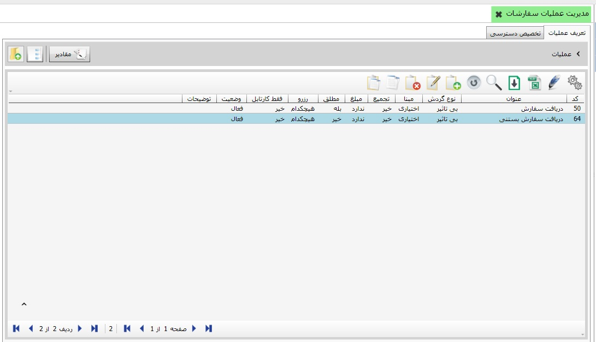
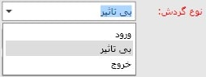
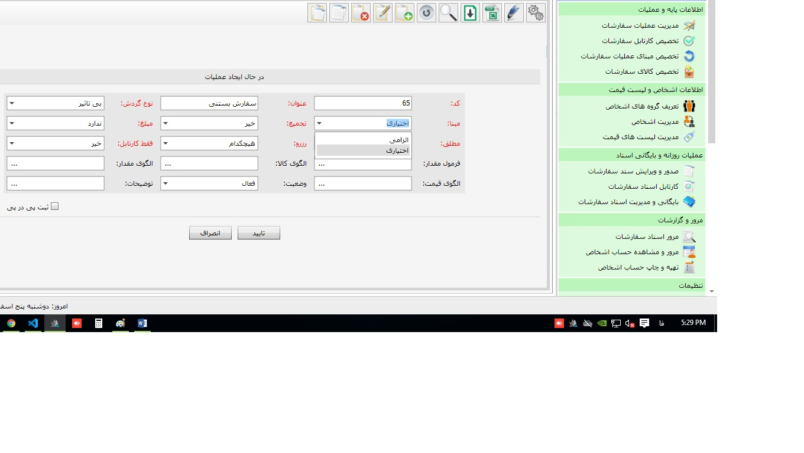
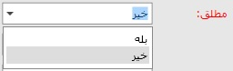
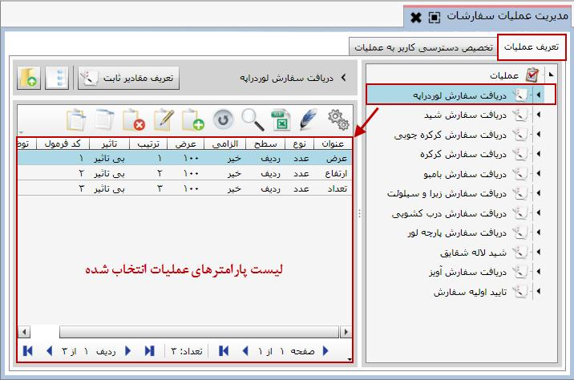
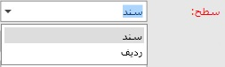
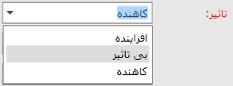

برای شروع باید در این قسمت عملیات صدور سفارشات را بر اساس روال موجود در سازمان خود تعریف کنید، همچنین از این قسمت می توانید تعیین کنید که هر کاربر به کدام عملیات ها دسترسی داشته باشد. برای ورود به این قسمت کافی است از لیست منوها بر روی منوی مورد نظر کلیک کنید:
همان طور که در شکل بالا ملاحظه می کنید صفحه «مدیریت عملیات سفارشات» شامل دو تب تعریف عملیات و تخصیص دسترسی کاربر به عملیات می باشد که در تصویر فوق تب تعریف عملیات انتخاب شده است. این تب شامل جدولی است که عملیات تعریف شده سفارشات را همراه با مشخصات و جزئیات آن ها نمایش می دهد. کاربرد این جدول نیز همانند همه جدول های موجود در نرم افزار که قبلا توضیح دادیم می باشد. در ادامه نحوه ایجاد عملیات و پارامتر های آن را شرح خواهیم داد.
در شکل بالا مشاهده می کنید که تعدادی عملیات سفارشات تعریف شده است که مربوط به سفارش انواع پرده می باشد. مثال های ذکر شده در این فایل بر اساس سفارشات پرده می باشد اما شما می توانید از نرم افزار صدور سفارشات سایان برای کاربردهایی متناسب با فعالیت خودتان استفاده نمایید. برای ایجاد یک عملیات جدید از نوار ابزار صفحه آیکن اضافه
 را کلیک کنید تا فرم ایجاد عملیات نمایان شود:
را کلیک کنید تا فرم ایجاد عملیات نمایان شود:

کد عملیات به صورت اتوماتیک توسط سیستم تعیین می شود، می توانید آن را تغییر دهید اما بعد از تایید فرم دیگر قابل ویرایش نمی باشد. در ابتدا عنوان عملیاتی را که می خواهید ایجاد کنید در فیلد عنوان تایپ کنید، برای مثال نام عملیات را تایید اولیه سفارش قرار می دهیم.
اگر عملیات در حال ایجاد دارای شخص باشد در فیلد شخص از لیست باز شده گزینه دارد و در غیر این صورت گزینه ندارد را انتخاب کنید.
همچنین در مورد فیلدهای انبار، مرکز هزینه، شعبه و پروژه اگر از لیست باز شده گزینه دارد را انتخاب کنید در هنگام صدور سند خرید و فروش باید فیلد های مربوطه را معین کنید و در صورت عدم تعیین، سیستم به شما اجازه ثبت سند را نخواهد داد.
درلیست باز شده از فیلد نوع گردش با توجه به اینکه عملیات در حال ایجاد چه تاثیری روی موجودی انبار خواهد گذاشت یک گزینه را انتخاب می کنید. از آنجا که عملیات سفارشات را طوری تنظیم می کنیم که تاثیری در موجودی انبار نداشته باشد، بنابراین گزینه بی تاثیر را انتخاب می کنیم.
در لیست باز شده از فیلد مبنا با توجه به اینکه می خواهید عملیات در حال ایجاد الزاما بر مبنای عملیات دیگری صادر شود یا نه یک گزینه را انتخاب کنید، اگر گزینه الزامی را انتخاب کنید شما در هنگام صدور سند خرید و فروش ملزم به تعیین مبنا هستید ما در این مثال می خواهیم تایید اولیه سفارش الزاما بر مبنای دریافت سفارش صادر شود بنابراین گزینه الزامی را انتخاب می کنیم.
زمانی که چند عملیات یک مبنای مشترک داشته باشند اگر فیلد مطلق را برای تمام آن عملیات ها خیر قرار دهید در هنگام صدور سند در قالب آن عملیات ها بدون توجه به اسناد صادر شده قبلی سند جدید صادر می شود ولی اگر برای یکی از آن عملیات ها فیلد مطلق روی گزینه بله قرار گیرد، دیگر دو عملیات نمی توانند مبنای مشترک داشته باشند.
شما می توانید از طریق فیلد فرمول مقدار، برای مقدار عملیات ایجادی فرمولی تعیین کنید که در هنگام صدور سند خرید و فروش بر حسب آن فرمول، مقدار عملیات محاسبه گردد. با کلیک بر علامت سه نقطه ... داخل فیلد پنجره فرمول مقدار ظاهر می شود که می توانید داخل آن فرمول را وارد کنید.

فرمول مقدار عملیات سفارشات در این قسمت وارد می شود. توجه کنید که در پنجره فرمول مقدار شما می توانید از پارامترهای عملیات تعریف شده به عنوان متغیرهای فرمول استفاده کنید.
در ادامه، فیلد وضعیت به صورت پیش فرض فعال می باشد چنانچه در هر زمان آن را به حالت غیر فعال تغییر دهید دیگر نمی توانید بر اساس آن عملیات، سند سفارشات صادر کنید و عملیات غیر فعال در فرم صدور سند سفارشات نمایش داده نمی شود.
و در نهایت اگر توضیحی لازم بود در فیلد توضیحات وارد کنید و بر روی دکمه تایید کلیک کنید تا عملیات جدید ایجاد شود.
بعد از ایجاد یک عملیات شما می توانید در صورت نیاز برای آن عملیات پارامتر نیز تعریف کنید. برای مشاهده پارامترهای یک عملیات از لیست درختی سمت راست صفحه «مدیریت عملیات سفارشات»، عملیات مورد نظر را انتخاب کنید و یا در سمت چپ روی عملیات مورد نظر دبل کلیک کنید، اگر عملیات انتخابی دارای پارامتر باشد آنها را مشاهده خواهید کرد.

برای اضافه کردن یک پارامتر جدید در لیست پارامتر ها روی گزینه اضافه
کلیک کنید تا فرم ایجاد پارامتر نشان داده شود:
فیلد کد غیر فعال است به این معنی که پارامترهای عملیات دارای کد نمی باشد. عنوان پارامتر را در فیلد عنوان تایپ کنید، در شکل بالا پارامتر جهت در حال ایجاد است. در فیلد نوع، نوع پارامتر مورد نظر را از لیست باز شده انتخاب نمایید، در اینجا نوع پارامتر جهت را مقدار ثابت انتخاب می کنیم. در ادامه نحوه تعریف لیست مقادیر ثابت را ارائه خواهیم داد.
پارامتر عملیات را می توانید در سطح سند تعریف کنید و یا در سطح ردیف، اگر پارامتر را در سطح سند قرار دهید پارامتر ایجادی قبل از ردیف های جدول صدور سند یا در انتهای فرم صدور سند سفارشات به صورت یک فیلد از شما سوال می شود. اگر پارامتر عملیات در سطح ردیف ایجاد شود به صورت یک ستون در فرم صدور سند خرید و فروش نمایش داده می شود و شما باید مقدار آن پارامتر را برای هر ردیف سند جداگانه مشخص کنید.
اگر فیلد الزامی را روی بله تنظیم کنید در هنگام صدور سند سفارشات الزام به تعیین مقدار پارامتر دارید و در صورت عدم تعیین آن سند سفارشات ثبت نمی شود. فیلد عرض، عرض ستون پارامتر در سطح ردیف و یا عرض فیلد پارامتر در سطح سند را تعیین می کند. در فیلد ترتیب پارامتر های یک عملیات به ترتیب ایجاد شماره می گیرند و شما می توانید توسط آن مکان فیلد پارامتر را در سند تعیین کنید.
اگر در لیست باز شده از فیلد نوع ، گزینه پول را انتخاب کنید فیلد تاثیر فعال می شود و بسته به تاثیری که پارامتر ایجادی روی مبلغ سند خواهد گذاشت باید یکی از سه گزینه موجود در لیست را انتخاب نمایید. برای پارامتر جهت که از نوع مقدار ثابت می باشد این فیلد غیر فعال است.
کد فرمول به صورت پیش فرض برابر با همان شماره ترتیب می باشد و قابل تغییر می باشد. توجه کنید که در هنگام تعریف فرمول ها از کد فرمول هر پارامتر استفاده می شود.
شما می توانید داخل فیلد فرمول، فرمولی برای محاسبه پارامتر وارد کنید، با کلیک بر علامت سه نقطه ... داخل فیلد فرمول پنجره ویرایش فرمول ظاهر می شود و می توانید فرمول را وارد کنید. (در فرم صدور سند سفارشات مقدار پارامتر عملیات را می توان به صورت دستی وارد کرد و یا با فرمولی که در این قسمت وارد می کنید مقدار پارامتر به صورت اتوماتیک محاسبه شود.)
و در نهایت با تایپ کردن توضیحات لازم در فیلد توضیحات و تایید کردن فرم ایجاد پارامتر عملیات، پارامتر جدید ثبت می شود.
پس از ایجاد پارمتر مورد نظر در صورتی که نوع پارامترشخص و یا انبار بود باید گروه های اشخاص تعریف شده در منوی تعریف گروه های اشخاص با استفاده از دکمه مفادیر
 به پارامتر مورد نظر تخصیص دهیم شکل های زیر این مراحل را نشان می دهد.
به پارامتر مورد نظر تخصیص دهیم شکل های زیر این مراحل را نشان می دهد.

گروه های مورد نظر را از قسمت موارد انتخاب نشده به قسمت موارد انتخاب شده انتقال دهید.

 برا ی مشاهده گروه های اشخاص در قسمت موارد انتخاب نشده ابتدا باید گروه های مورد نظر را در منوی تعریف گرو های اشخاص، تعریف نمائید.
برا ی مشاهده گروه های اشخاص در قسمت موارد انتخاب نشده ابتدا باید گروه های مورد نظر را در منوی تعریف گرو های اشخاص، تعریف نمائید.
پس از ایجاد عملیات و پارامترهای مورد نیاز، باید دسترسی کاربران به این عملیات را مشخص کنید، برای این کار از صفحه مدیریت عملیات، تب «تخصیص دسترسی کاربر به عملیات» را انتخاب کنید:

همان طور که ملاحظه می کنید شکل بالا دارای سه ناحیه می باشد، در قسمت 1 لیست نام کاربران را مشاهده می کنید که از میان آنها کاربر مدیر سیستم در حالت انتخاب قرار دارد. قسمت 2 شامل عملیاتی است که به این کاربر تخصیص داده شده است و قسمت 3 مابقی عملیات ها را شامل می شود. برای تخصیص یک عملیات به یک کاربر کافی است نام کاربر را انتخاب کرده و آن عملیات را از ناحیه 3 به ناحیه 2 بفرستید.(عملیات انتقال با دو فلش
 انجام می شود.)
انجام می شود.)
در فرم صدور سند سفارشات هرکاربر فقط با عملیات هایی می تواند سند صادر کند که دسترسی به آن عملیات ها را داشته باشد، در شکل فوق کاربر مسئول سفارشات در سیستم سفارشات می تواند برای عملیات موجود در جدول شماره 2 سند صادر کند.